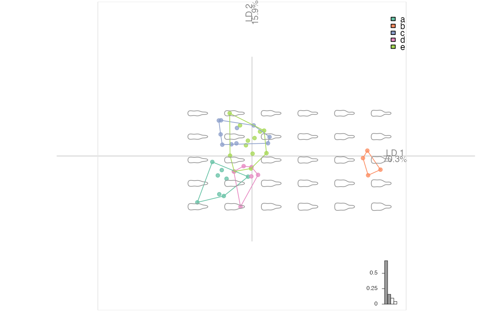

plot_LDA( x, axes = c(1, 2), palette = pal_qual, points = TRUE, points_transp = 1/4, morphospace = FALSE, morphospace_position = "range", chull = TRUE, chullfilled = FALSE, labelgroups = FALSE, legend = TRUE, title = "", center_origin = TRUE, zoom = 0.9, eigen = TRUE, box = TRUE, iftwo_layer = layer_histogram_2, iftwo_split = FALSE, axesnames = TRUE, axesvar = TRUE )
| x | LDA object |
|---|---|
| axes |
|
| palette |
|
| points |
|
| points_transp |
|
| morphospace |
|
| morphospace_position | to feed layer_morphospace_PCA (default: "range") |
| chull |
|
| chullfilled |
|
| labelgroups |
|
| legend |
|
| title |
|
| center_origin |
|
| zoom |
|
| eigen |
|
| box |
|
| iftwo_layer | function (no quotes) for drawing LD1 when there are two levels. So far, one of layer_histogram_2 (default) or layer_density_2 |
| iftwo_split | to feed |
| axesnames |
|
| axesvar |
|
This approach will replace plot.LDA.
This is part of grindr approach that may be packaged at some point. All comments are welcome.
Other grindr:
drawers,
layers_morphospace,
layers,
mosaic_engine(),
papers,
pile(),
plot_NMDS(),
plot_PCA()
### First prepare an LDA object # Some outlines with bot bl <- bot %>% # cheap alignement before efourier coo_align() %>% coo_center %>% coo_slidedirection("left") %>% # add a fake column mutate(fake=sample(letters[1:5], 40, replace=TRUE)) %>% # EFT efourier(6, norm=FALSE) %>% # LDA LDA(~fake)#>bl %>% plot_LDA %>% layer_morphospace_LDA#># Below inherited from plot_PCA and to adapt here. #plot_PCA(bp) #plot_PCA(bp, ~type) #plot_PCA(bp, ~fake) # Some curves with olea #op <- olea %>% #mutate(s=coo_area(.)) %>% #filter(var != "Cypre") %>% #chop(~view) %>% lapply(opoly, 5, nb.pts=90) %>% #combine %>% PCA #op$fac$s %<>% as.character() %>% as.numeric() #op %>% plot_PCA(title="hi there!") ### Now we can play with layers # and for instance build a custom plot # it should start with plot_PCA() #my_plot <- function(x, ...){ #x %>% # plot_PCA(...) %>% # layer_points %>% # layer_ellipsesaxes %>% # layer_rug # } # and even continue after this function # op %>% my_plot(~var, axes=c(1, 3)) %>% # layer_title("hi there!") %>% # layer_stars() # You get the idea.